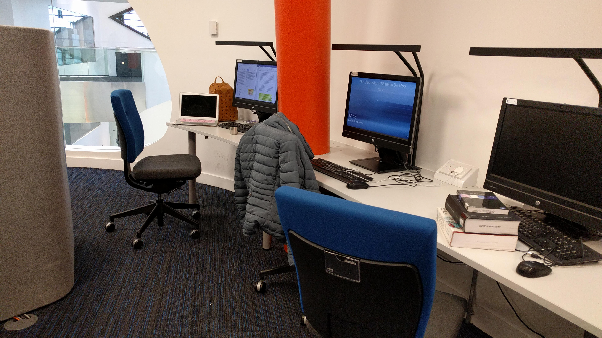
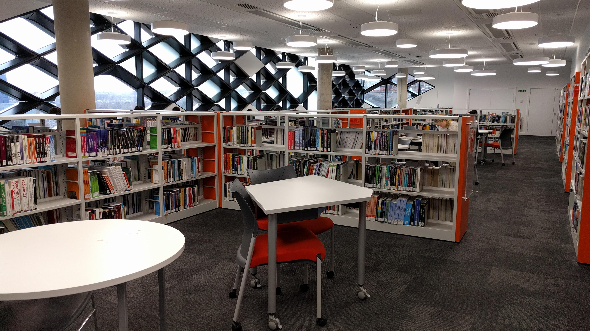
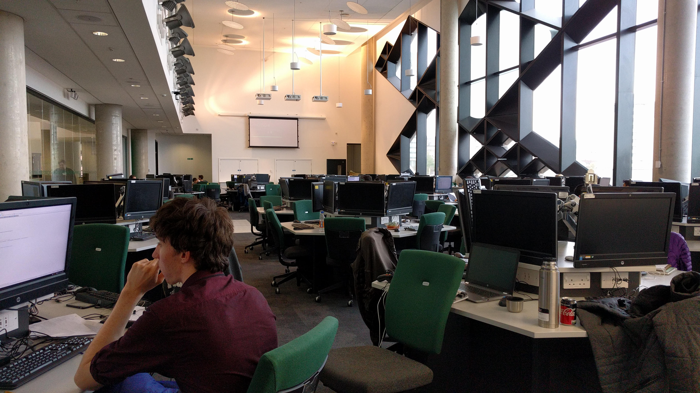

Facilities within the Diamond
The Diamond is a six-storey building that features a wide range of facilities with 24/7 access for student of the University of Sheffield. Featuring 1,000 study spaces, 30+ breakout and group study rooms, several computer labs featuring over 400 spaces, a laptop rental service and, for when you need to study in peace, several silent study areas.
On the top floor of the Diamond is one of the 5 Libraries at the University of Sheffield that features a wide array of academic books for students to take out to help with their learning and personal growth, with a dedicated, professional staff to help you. This is demonstrated by the Library service coming joint 1st for Library service for universities in the UK a testament to it's quality.
The Diamond also features an IForge which is a student run prototyping lab where they can prototype anything they can dream of. Having 3D printers, laser cutters, woodworking tools and an electronics station where students can make anything they want; Gaining them valuable skills and realising their creativity.
On top of this there is also a Clean Room that provides a unique environment for students to study microfabrication techniques, the room being one hundred times cleaner than outside air allowing students to create and test devices smaller than a living cell without contamination.
Diamond features four large computer labs, which have a total of over 400 computers available for students to use. One of the largest labs has a purpose-built robot arena, that is used to test NAO humanoid robots and Lego Mindstorm blocks.
There is also a Virtual and Augment Reality suite featuring 9 workstations and a large 5x2.6m in size VR screens with active dual 4k wall and floor projection. There are also 8 camera active infrared tracking system allows students to motion capture up to 50 targets as well as finger tracking.
Furthermore, there are 15 other labs that you will be able to experience during you time at Diamond, including:
- Pilot Plant
- Structures and Dynamics Laboratory
- Pilot Plant Control Room
- Analytics Laboratory
- Machine Shop
- Project Space
- Aerospace Simulation Laboratory
- Materials Laboratory
- Bioengineering Bacterial and Tissue Laboratories
- Fluids Engineering Laboratory
- Thermodynamics and Heat Transfer
- Aerospace Propulsion Laboratory
Finally is the Electronics and Control Lab, a cutting edge facility, that is used for practical experiments. Allowing studens to experiment with an incredible range of systems, like mobile phones, space craft, robotics and laptops. Providing an understanding and practicle experience for students.